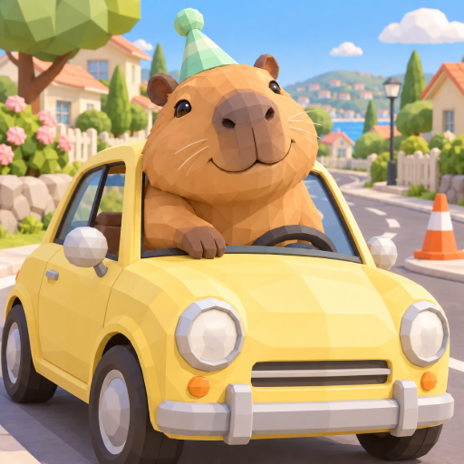

<- all projects

Capybara Driving Academy
PC
Volume
Live
A calm mind. A tiny party hat.
Practice everyday driving judgment with Coco, the calmest instructor in town. Look at each scene, spot the hazards and choose the calm, considerate response, like leaving room for others. Coco explains every answer, even the mistakes, and you can revisit tricky choices whenever you like. Finish a short set of funny challenges to earn decorations for your learner car. These are general road-awareness situations, not an official licensing test. 180 friendly scenarios across 36 short outings, 20 little road stories and 30 colorful car and instructor decorations.